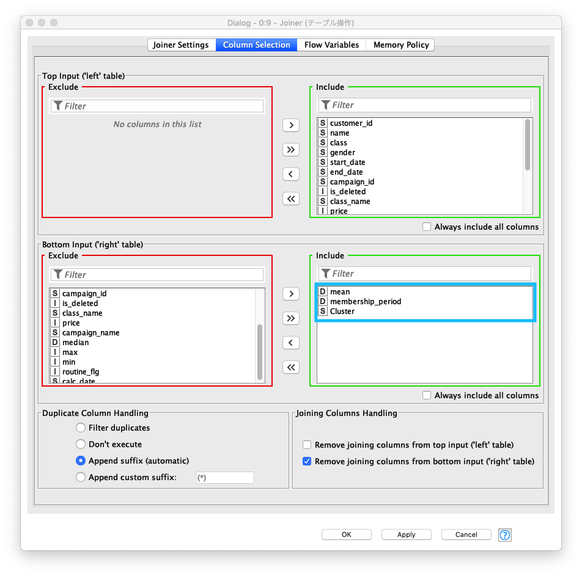
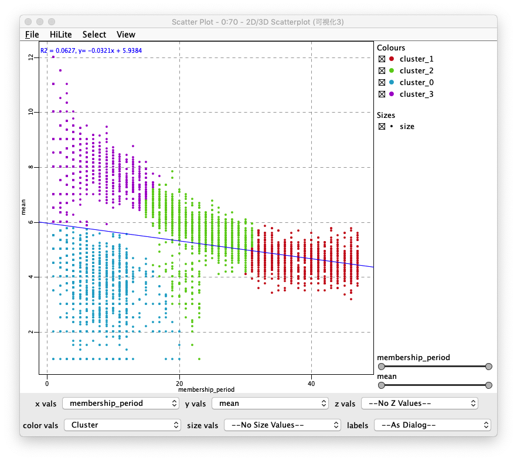

KNIME 入門編 / クラスタリング
- 作成日: 2020-04-17
- 更新日: 2020-04-24
今回は、すでにデータ整形が終わっている分析用データ (トレーニングジム会員の利用履歴) を使い 会員のクラスタリング (クラスター分析) を行い、それぞれのクラスターの行動の傾向を確認します。クラスタリングとは、異なる性質・特徴をもつものが混在する集合から似た性質・特徴を持つグループを作ることです。基本的なデータ解析手法としてデータマイニングでも頻繁に利用されている手法です。
クラスタリングの手法がいくつかありますが、今回は、非階層クラスタリングに属する k-means を使います。 非階層クラスタリングは、予め作成するクラスター数を決定し、決めた数の階層を持たないクラスター (グループ) にサンプルを分割する方法です。サンプル数が極めて大きいビッグデータ分析に適しています。
ワークフロー全体
整形後データ読み込んだ後に、クラスタリングを実行し、最後にクラスタリング結果の可視化と集計を行います。
- 顧客+利用履歴データ (CSV形式ファイル) 読み込み
- データ探索 (確認)
- クラスタリング
- 可視化 + 集計
Fig. 全体ワークフロー
分析用データ読み込み
顧客データ + 利用履歴 CSVファイル 読込み
読込み対象のCSVファイルの文字コードが UTF-8 であることを事前に確認した後、KNIMEに 顧客データ + 利用履歴 (CSV) を読み込み設定を行います。主に 列タイトル行の存在、区切り文字 (delimiter) を設定します。KNIMEにデータのインポートが完了した後に、ファイルが正しくロードされているか確認します。
- ローカルファイルにある
顧客データ + 利用履歴 CSVファイルを指定し、Has Row Header (行見出し存在)のチェックを外す - CSVファイルの読み込み成功後、データプレビューエリアにレコードが表示される
Fig. CSVファイル 読込み 設定

Fig. CSVファイル テーブル表示

- 利用ノード: IO / Read / CSV Reader
クラスタリング / 処理
Fig. クラスタリング / 処理 / ワークフロー

準備 / データ探索
読み込んだデータが どのような特徴を持っているのか把握しておく必要があります。Data Explorer ノードを使い簡単なデータ分析 - 探索的データ分析 (Exploratory Data Analysis: EDA) を行います。次の情報を確認します。
1. 月の利用回数の分布
利用者の月の利用回数は、3回から5回が多いことがわかります
Fig. データ探索 / mean (利用回数 平均/月)

2. 会員期間の分布
会員期間は、1年未満の利用者が多いことがわかります。依って、一年以上の会員期間の利用者は、継続的に利用していることがわかります
Fig. データ探索 / membership_period (会員期間)
3. 退会会員数
退会会員数は、継続会員数の約半数ということがわかります
Fig. データ探索 / membership is_deleted (退会)

4. 月額金額の分布
月額金額は三種類あり [6000円, 7500円, 10500円] 、その中でも10,500円のコースの会員数が他のそれぞれのコースの二倍近くいることがわかります
Fig. データ探索 / membership price (月額)

5. 質的データの要約
データの要約 (サマリー) を見ていくと、このデータの概要を理解することができます。
end_date の結果は、退会した人が 2842人いて ユニークな値が 12存在します。「2842人が退会した日が12日ある」ことを意味します。その一方、start_date の結果は、「入会日は 215日ある」その日数は、退会日よりも多いことがわかります。その他、クラ数数、キャンペーンう数等を把握することができます。
Fig. データ探索 / Nominal
正規化
クラスタリング処理を行う前に 数値データのスケールを 0から1の範囲に線形変換 (Linear transformation) します。
正規化 設定画面で、正規化対象のカラム - mean (平均 利用回数/月), membership_pedriod (会員期間) を選択します。
Fig. Normalizaer 正規化 / 設定
正規化処理後、mean (平均 利用回数/月), membership_pedriod (会員期間) の各列の値が 「0〜1 の範囲」に変換されたことを確認します。
Fig. Normalizaer 正規化 / 正規化 後テーブル

クラスタリング
トレーニングジムの会員の行動傾向を4つのクラスターに分けます。クラスタリング 設定画面の Number of clusters (クラスター数) の値を 「4」に設定します。また、クラスタリングに必要なカラムに mean (平均利用回数/月) と membership_period (会員期間) の二つを選択します。
Fig. クラスタリング 設定
クラスタリング後の結果を コンテキストメニュー (ポップアップメニュー) の Clusters を実行し、4つのクラスターの存在と、それぞれのクラスターの値を確認します。
Fig. クラスタリング 結果 テーブル

クラスタリング 色指定
可視化した時に 4つのクラスターに属する値を容易に判別できるように、それぞれのクラスターの色を指定します。この処理に依り、生成されたチャートにプロットされた値がどのクラスターに属しているかわかります。
Fig. クラスタリング 色指定

クラスタリング / 集計, 可視化
Fig. クラスタリング / 集計, 可視化
テーブル結合
正規化処理で 実際のデータと異なる値を持つカラム (mean (平均利用回数/月), membership_period (会員期間)) が存在しているので、正規化前後のそれぞれの値を使えるように、正規化前の元のテーブルと正規化後のテーブルを結合します。
join modeにinner join (内部結合)を選択する- 結合するカラムに
left table、right table共にRow IDを指定する
Fig. テーブル結合 / 設定 (1)

right tableは、membership_period (会員期間)とCluster (クラスター)を対象カラムに指定し、重複するカラムを対象外にする
Fig. テーブル結合 / 設定 (2)

集計
クラスター別退会者集計
Fig. 集計 / クラスター別退会者集計 / 設定 (1)

Fig. 集計 / クラスター別退会者集計 / 設定 (2)

Fig. 集計 / クラスター別退会者集計 / 結果テーブル

クラスター別定期利用者集計
Fig. 集計 / クラスター別定期利用者集計 / 設定 (1)

Fig. 集計 / クラスター別定期利用者集計 / 設定 (2)

Fig. 集計 / クラスター別定期利用者集計 / 結果テーブル

可視化
Parallel Coordinates Plot
Fig. 可視化 / Parallel Coordinates Plot / 設定
Fig. 可視化 / Parallel Coordinates Plot / 結果

Scatter Plot (1)
Fig. 可視化 / Scatter Plot (1) / 設定

Fig. 可視化 / Scatter Plot (1) / 結果
Scatter Plot (2)
Fig. 可視化 / Scatter Plot (2) / 設定

Fig. 可視化 / Scatter Plot (2) / 結果

利用ノード一覧
- IO / Read / CSV Reader
- Nodes / KNIME Labs / JavaScript Views (Labs) / Data Explorer
- Nodes / Manipulation / Column / Transform
- Workflows / KNIME Hub / Users / taka / Public / k-means
- Nodes / Views / Property / Color Manager